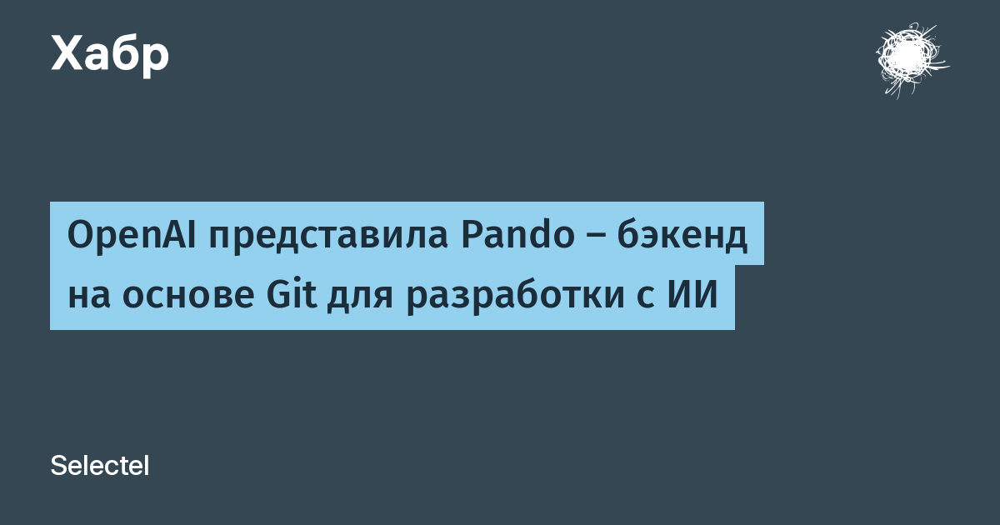

OpenAI опубликовала официальный пост «Scaling Git at OpenAI» о собственном бэкенде системы контроля версий. Причина прозаична: Codex и другие ИИ-ассистенты генерируют тысячи коммитов и слияний в час, тогда как классические Git-серверы рассчитаны на инженеров-людей с десятками изменений в день. По данным компании, к концу года квартальный объём коммитов в монорепо вырастет более чем на 2400%, а надёжность прежней инфраструктуры уже упала ниже 90%: клонирование тормозило, слияния падали, размеры репозиториев упирались в лимиты.
Pando сохранил полную совместимость с Git, но отказался от двух допущений классических серверов: единого согласованного состояния всех веток и индивидуального pack-файла под каждого клиента. Запись в каждую ветку идёт независимо, входящий pack проверяется и кладётся в BLOB-хранилище без распаковки в локальный репозиторий, а метаданные вершин веток живут отдельно. Для разработчика и агента важен порядок обновлений внутри своей ветки — его Pando и гарантирует.
Бэкенд строили 10 недель: архитектуру спроектировал один инженер, а реализацию выполнили группы агентов Codex на Rust. С апреля Pando работает в проде и обслуживает около петабайта данных Git в день, сокращая задержку отправки изменений почти в пять раз (примерно на 80%). Git-клиенты, протокол и рабочие привычки команды менять не пришлось — OpenAI сознательно оставила экосистему, починив только серверную часть.
Pando — первый публичный случай, когда инфраструктура разработки переписана под нагрузку ИИ-агентов, а не людей: инструменты CI, код-ревью и трассировки теперь должны держать темп машин, а не людей. Показательно и то, как его построили: человек задал архитектуру, агенты написали код — ровно тот сценарий, который обычно остаётся в слайдах.